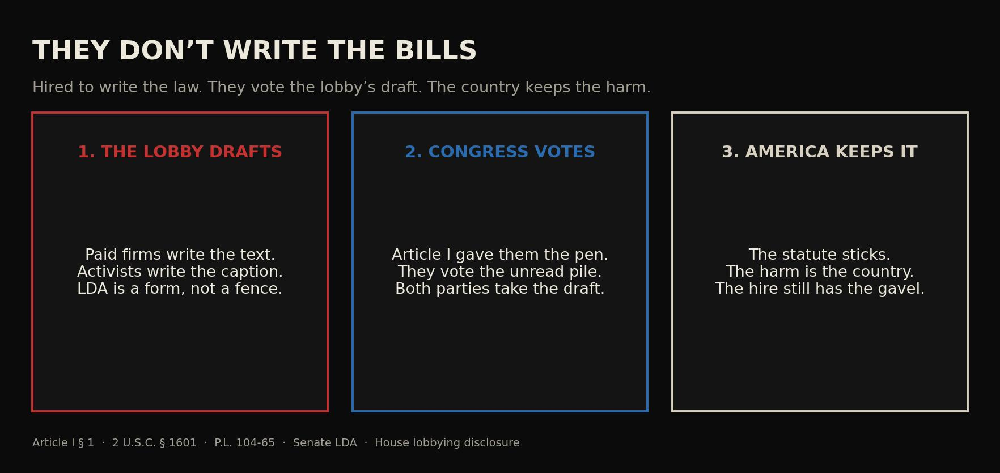

Journal · Congress · Sep 21, 2026 · 30-second read
They don’t write the bills

“All legislative Powers herein granted shall be vested in a Congress of the United States”
U.S. ConstitutionOpen the record ↗ ✓ Verified by SwampForce
The record Tap a card for the detail. Each one opens the source.
The Lobbying Disclosure Act says paid lobbyists influence federal officials.U.S. Code
The Lobbying Disclosure Act — P.L. 104-65 — opens with a finding: paid lobbyists influence federal officials in the conduct of government, and the public is entitled to know who they are.
U.S. CodeOpen the record ↗The Senate and House collect lobbying disclosures.Senate record
The Senate and the House take the forms.
Senate recordOpen the record ↗Article I gives Congress, not lobbyists, the power to legislate.U.S. Constitution
Article I, Section 1 vests all legislative powers herein granted in a Congress of the United States.
U.S. ConstitutionOpen the record ↗Read the full essay
The verified text, checked against primary records on Sep 24, 2026. Passages marked Our view are opinion.
Our view The lobbyist drafts. The activist supplies the caption. Congress votes the unread pile. America keeps the harm.
Image: /images/chart-they-dont-write.jpg — Three steps: lobby drafts, Congress votes, country keeps the harm
Article I, Section 1 vests all legislative powers herein granted in a Congress of the United States. That is the job they were hired to do: write the law. They do not. A paid lobbyist drafts the text. An activist writes the caption that makes the unread pile sound like a moral. The Member votes yes or no on a package nobody in the chamber has read, on the word of the people who wrote it and the people who will sell it on television. The country is then stuck with the harm. That is not petition. Petition is a citizen walking to the door. This is a second government that does not stand for election.
Our view Congress already admitted the method. The Lobbying Disclosure Act — P.L. 104-65 — opens with a finding: paid lobbyists influence federal officials in the conduct of government, and the public is entitled to know who they are. The Senate and the House take the forms. A form is not a fence. It is a receipt for the second government. Why the lobby should be illegal is the argument. This page is the mechanism: draft, caption, vote, harm. The twelve appropriations bills that do not pass are how the unread pile is born. The $7 billion machine is what the hire costs while someone else writes the work. Both parties take the draft. Both parties take the vote. The people keep the statute.
Our view They were hired to write the law. They vote the lobby’s draft. America is stuck with the harm.
Receipts
- Article I, Section 1 — constitution.congress.gov ↗
- 2 U.S.C. § 1601 — Lobbying Disclosure Act findings — law.cornell.edu ↗
- Senate — LDA filings — lda.senate.gov ↗
- House — lobbying disclosure — lobbyingdisclosure.house.gov ↗
- P.L. 104-65 — Lobbying Disclosure Act of 1995 — congress.gov ↗